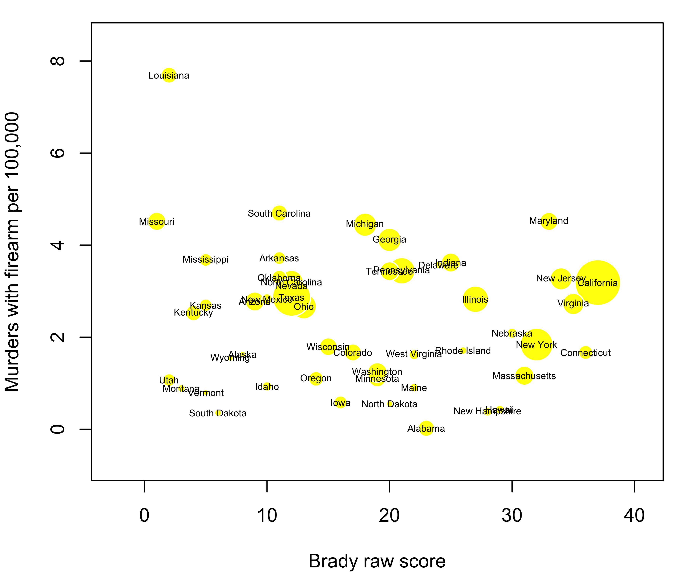
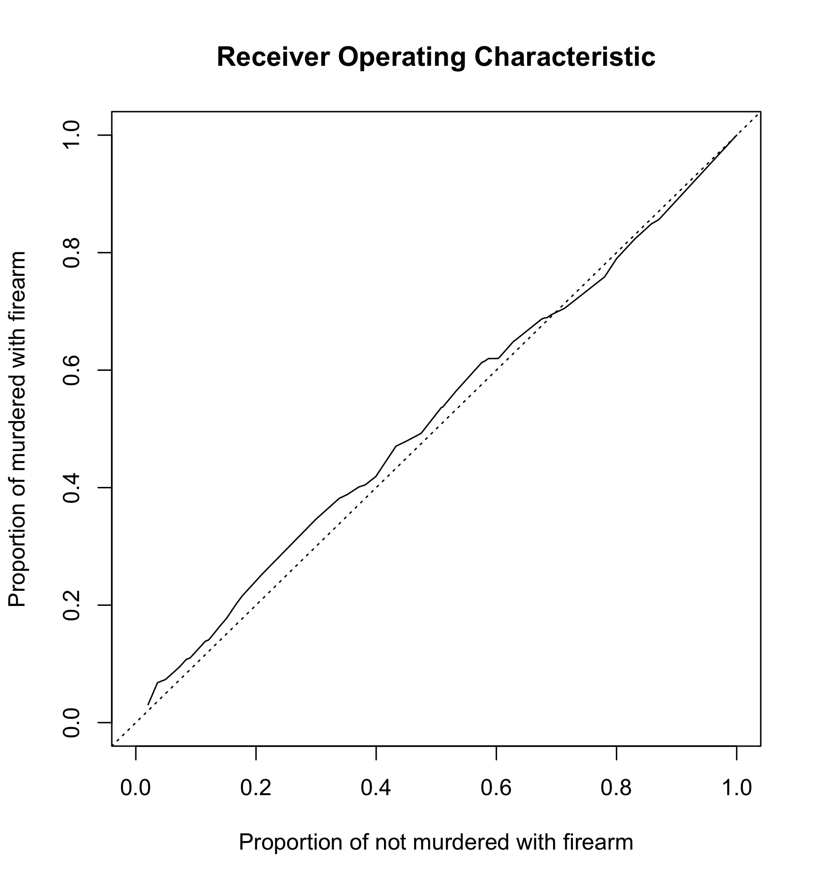
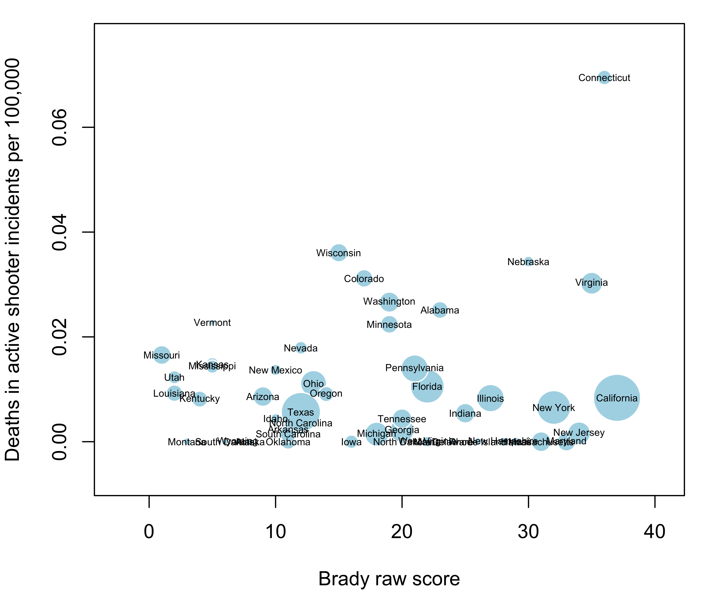
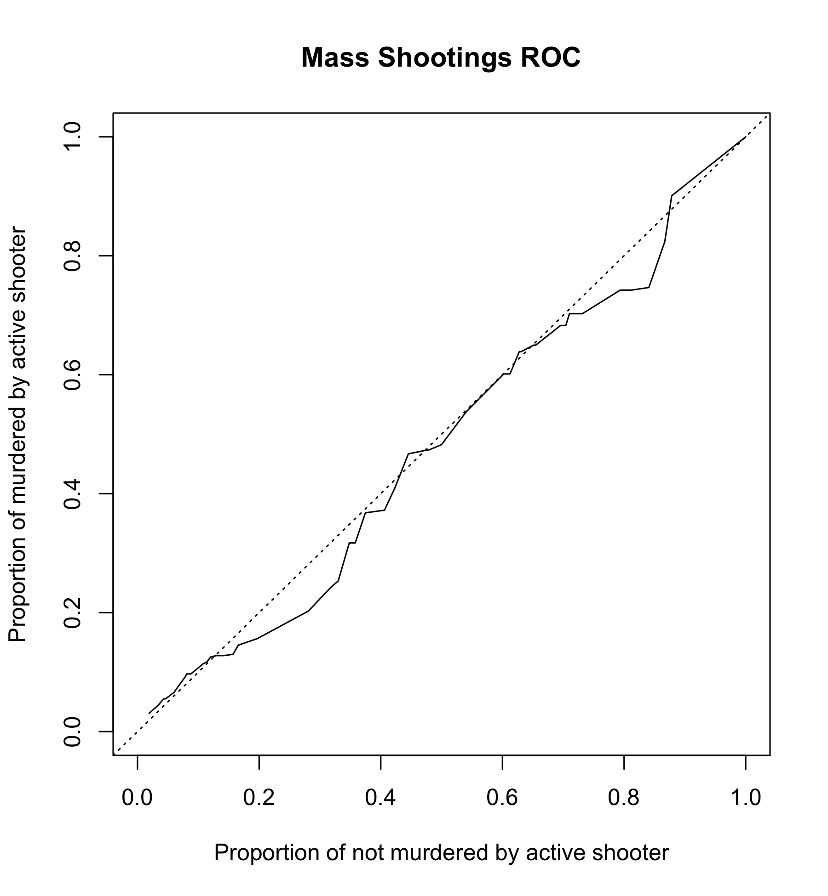
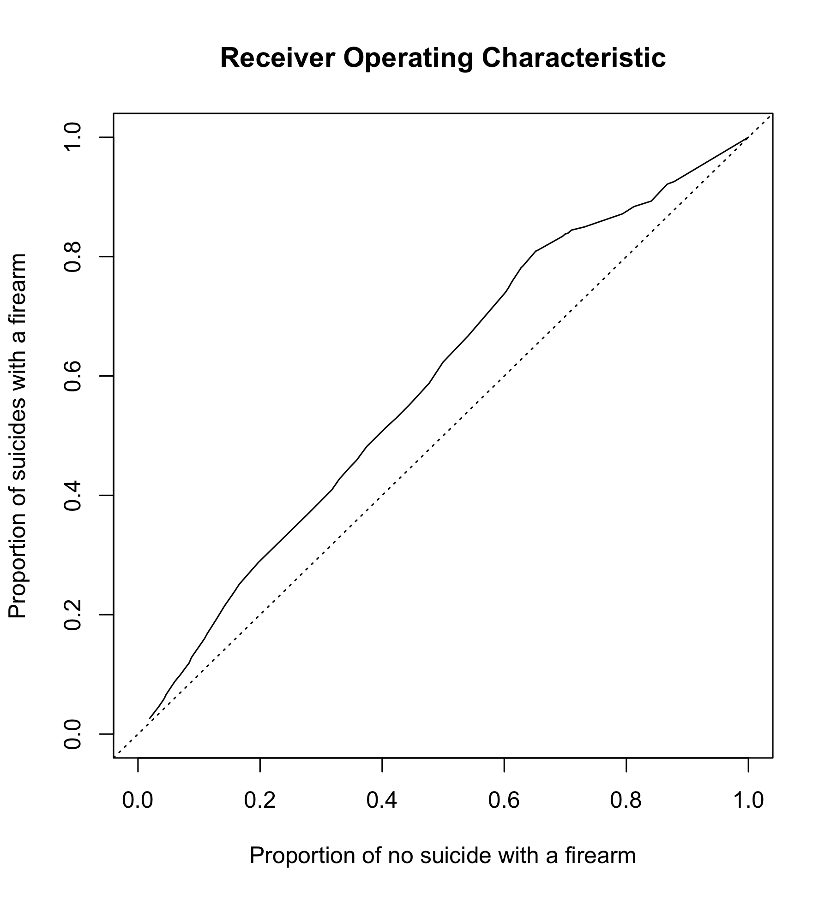

Brady Campain Scorecard Effectiveness
The Law Center to Prevent Gun Violence and the Brady Campaign to Prevent Gun Violence ranked all fifty states based on thirty policy approaches to regulating guns and ammunition. States received points for stronger laws and lost points for weaker laws.
The purpose of this analysis is to check the validity of the following statement by the Brady Campaign:
the data supports the conclusion that state gun laws and the rate of gun deaths are closely tied
Summary
The data does not support the conclusion that state gun laws and rate of murders with firearm are closely tied (p-value 0.35)
The data does not support the conclusion that state gun laws and rate of deaths in active shooter incidents are closely tied (p-value 0.71)
The data supports the conclusion that state gun laws and rate of suicides with a firearm are closely tied (p-value 3.5e-10)
1. Murders with Firearm
Start with a simple scatterplot.

Horizontal axis is raw score (higher number means stronger laws). Vertical axis is rate of murders with firearm. Each state is represented by a cirle, circle size is proportional to state’s population.
Next, plot receiver operating characteristic. It visually shows separating power of a model. Diagonal line means no separation, curve going through upper left corner means ideal separation.

Fit cross-sectional linear regression weighted by population:
Call:
lm(formula = d$firearm_murders_per_100000 ~ d$raw_score, weights = d$population)
Weighted Residuals:
Min 1Q Median 3Q Max
-6096.5 -2622.8 -948.4 1046.6 9840.0
Coefficients:
Estimate Std. Error t value Pr(>|t|)
(Intercept) 3.14976 0.38951 8.086 1.89e-10 ***
d$raw_score -0.01544 0.01634 -0.945 0.349
---
Signif. codes: 0 '***' 0.001 '**' 0.01 '*' 0.05 '.' 0.1 ' ' 1
Residual standard error: 3039 on 47 degrees of freedom
(1 observation deleted due to missingness)
Multiple R-squared: 0.01866, Adjusted R-squared: -0.00222
F-statistic: 0.8937 on 1 and 47 DF, p-value: 0.34932. Mass Shootings
Now repeat the same comparison with mass shooting deaths.


Call:
lm(formula = d$active_shooter_deaths_per_100000 ~ d$raw_score,
weights = d$population)
Weighted Residuals:
Min 1Q Median 3Q Max
-27.990 -14.594 -8.173 9.084 110.794
Coefficients:
Estimate Std. Error t value Pr(>|t|)
(Intercept) 9.091e-03 3.468e-03 2.622 0.0117 *
d$raw_score 5.532e-05 1.461e-04 0.379 0.7067
---
Signif. codes: 0 '***' 0.001 '**' 0.01 '*' 0.05 '.' 0.1 ' ' 1
Residual standard error: 27.19 on 48 degrees of freedom
Multiple R-squared: 0.002977, Adjusted R-squared: -0.01779
F-statistic: 0.1433 on 1 and 48 DF, p-value: 0.70673. Suicides with a Firearm
Finally, repeat the same comparison with suicides with a firearm.


Call:
lm(formula = d$suicides_with_firearms_per_100000 ~ d$raw_score,
weights = d$population)
Weighted Residuals:
Min 1Q Median 3Q Max
-9989.8 -2144.6 646.1 3918.4 9323.4
Coefficients:
Estimate Std. Error t value Pr(>|t|)
(Intercept) 10.86456 0.58940 18.433 < 2e-16 ***
d$raw_score -0.19537 0.02484 -7.867 3.51e-10 ***
---
Signif. codes: 0 '***' 0.001 '**' 0.01 '*' 0.05 '.' 0.1 ' ' 1
Residual standard error: 4621 on 48 degrees of freedom
Multiple R-squared: 0.5632, Adjusted R-squared: 0.5541
F-statistic: 61.88 on 1 and 48 DF, p-value: 3.505e-10Sources
Brady Campain to Prevent Gun Violence, 2013 State Scorecard
United States Census Bureau, Population Estimates
FBI, A Study of Active Shooter Incidents in the United States Between 2000 and 2013
Data
state raw_score murders murders_with_firearms active_shooter_deaths suicides_with_firearms population
1 Alabama 23 2 1 17 504 4830533
2 Alaska 8 34 12 0 120 737442
3 Arizona 9 304 184 8 655 6630799
4 Arkansas 11 154 110 1 322 2957957
5 California 37 1745 1224 45 1571 38414128
6 Colorado 17 174 88 23 489 5271132
7 Connecticut 36 86 60 35 92 3597168
8 Delaware 24 39 33 0 60 925353
9 Florida 22 NA NA 29 1566 19594467
10 Georgia 20 534 411 3 747 9991562
11 Hawaii 29 9 6 0 28 1408765
12 Idaho 10 26 15 1 200 1612785
13 Illinois 27 433 364 15 496 12889580
14 Indiana 25 311 238 5 523 6570518
15 Iowa 16 42 18 0 221 3092224
16 Kansas 5 112 78 6 241 2894630
17 Kentucky 4 165 111 5 453 4398500
18 Louisiana 2 453 356 6 408 4627491
19 Maine 22 24 12 0 137 1328778
20 Maryland 33 379 268 0 257 5936040
21 Massachusetts 31 135 78 0 112 6708810
22 Michigan 18 625 440 2 674 9900506
23 Minnesota 19 110 60 17 339 5420541
24 Mississippi 5 142 110 6 279 2990976
25 Missouri 1 371 273 14 556 6043708
26 Montana 3 15 9 0 147 1014402
27 Nebraska 30 57 39 9 111 1869300
28 Nevada 12 157 87 7 292 2790366
29 New Hampshire 28 21 5 0 81 1322660
30 New Jersey 34 401 291 2 194 8907384
31 New Mexico 10 106 59 4 222 2086890
32 New York 32 648 362 18 465 19691032
33 North Carolina 12 452 315 5 771 9845432
34 North Dakota 20 11 4 0 76 723626
35 Ohio 13 434 309 18 800 11572232
36 Oklahoma 11 191 127 0 433 3853405
37 Oregon 14 78 43 5 389 3928030
38 Pennsylvania 21 594 440 25 918 12783536
39 Rhode Island 26 31 18 0 34 1052856
40 South Carolina 11 296 224 1 470 4768498
41 South Dakota 6 12 3 0 71 845270
42 Tennessee 20 327 223 4 676 6496130
43 Texas 12 1133 760 21 1780 26500674
44 Utah 2 49 31 5 295 2903685
45 Vermont 5 9 5 2 59 627129
46 Virginia 35 315 225 35 601 8267875
47 Washington 19 155 86 26 483 6973281
48 West Virginia 22 54 30 0 225 1852985
49 Wisconsin 15 157 103 29 437 5743653
50 Wyoming 7 15 9 0 89 583131Fine print
FBI UCR has no murder data for Florida, limited data for Alabama and Illinois.